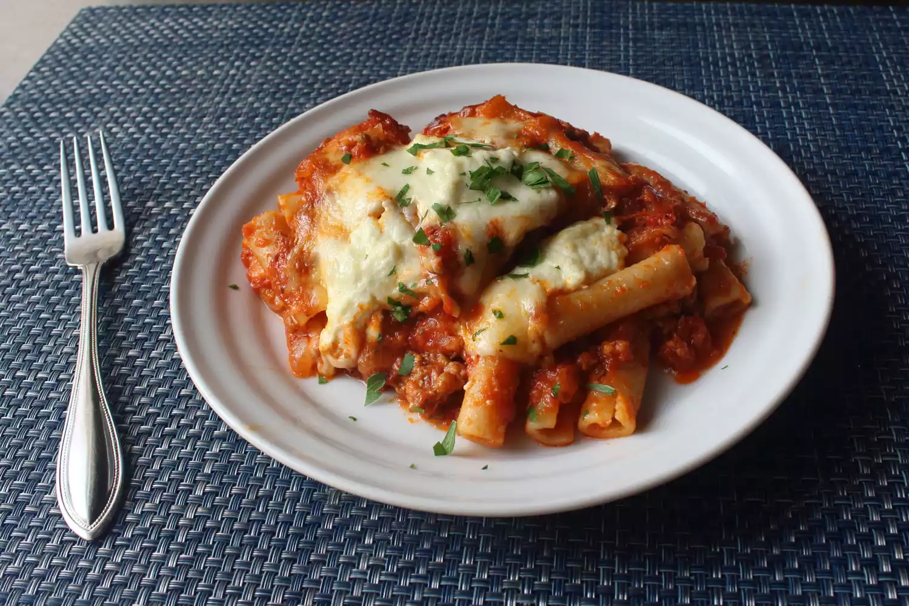

<!DOCTYPE html>
<html lang="en">
<head>
    <meta charset="UTF-8">
    <title>Baked Ziti/title>
</head>
<body>
    <h1> Baked ziti</h1>
    
        </p> Simply the best baked ziti recipe. I am half Italian, was raised eating the finest Italian-American cuisine, and have filmed almost 2,000 recipe videos, so when you consider all of those facts, it seems incredible that I have never posted a video for baked ziti. Hopefully I make up for that long wait by posting what I think is the best version of it.</p>
    <div>
        <h4>Ingredients</h4>
        <ul>
            <li>1 (5 ounce) can tuna, drained</li>
            <li>½ cup mayonnaise</li>
            <li>¼ cup chopped celery</li>
            <li>¼ cup chopped onion</li>
            <li>1 tablespoon chopped fresh parsley</li>
            <li>½ teaspoon lemon juice</li>
            <li>¼ teaspoon garlic powder</li>
            <li>⅛ teaspoon salt</li>
            <li>⅛ teaspoon ground black pepper</li>
            <li>1 pinch paprika, or to taste</li>
        </ul>
    </div>
    <div>
        <h4>Steps</h4>
        <ol>
            <li>Combine tuna, mayonnaise, celery, onion, parsley, lemon juice, garlic powder, salt, and pepper in a large bowl; mix well. Season with paprika; refrigerate until chilled.</li>
            
        </ol>
    </div>
</body>
</html>